In this project, I register overlapping photographs with projective transformations (homographies), warp them into a common frame with my own inverse-warping code, and blend them into image mosaics. The pipeline is: pick point correspondences by hand, solve for homographies by least squares, inverse-warp with nearest neighbour and bilinear interpolation, blend with weighted averaging (plain feathering and a 2-level Laplacian pyramid), and finally re-project the photos onto a cylinder (A.5).
Points are (x, y) = (column, row), and pixel (0, 0) is the center of the top-left pixel. A homography maps points of image 1 to image 2: \(p' = Hp\). All photos are downscaled so that the longest side is 1000 px before processing.
I shot three sets of photos, each with three overlapping views. Within a set, I rotated the camera about a fixed position between shots, so the views are related by a projective transformation (a homography), and neighbouring photos overlap substantially. Each set is shown from left to right.
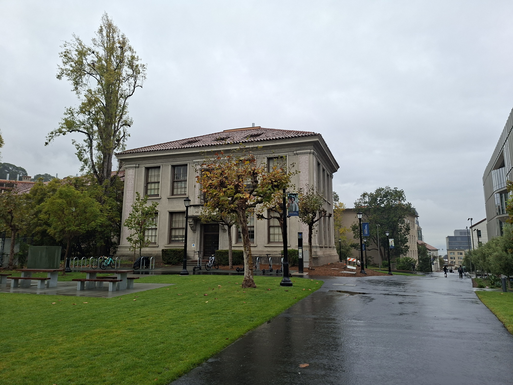
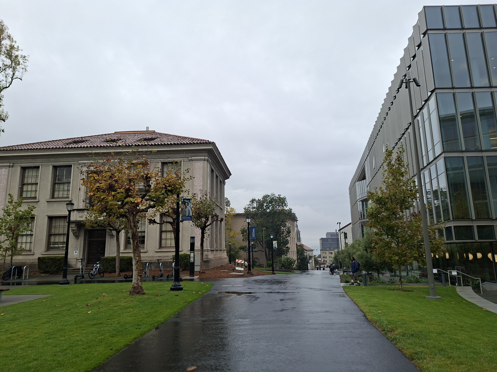
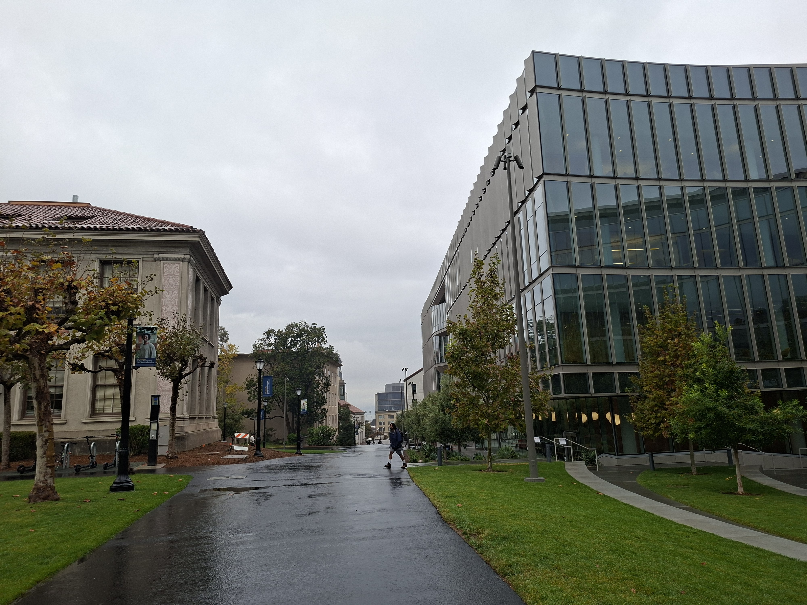
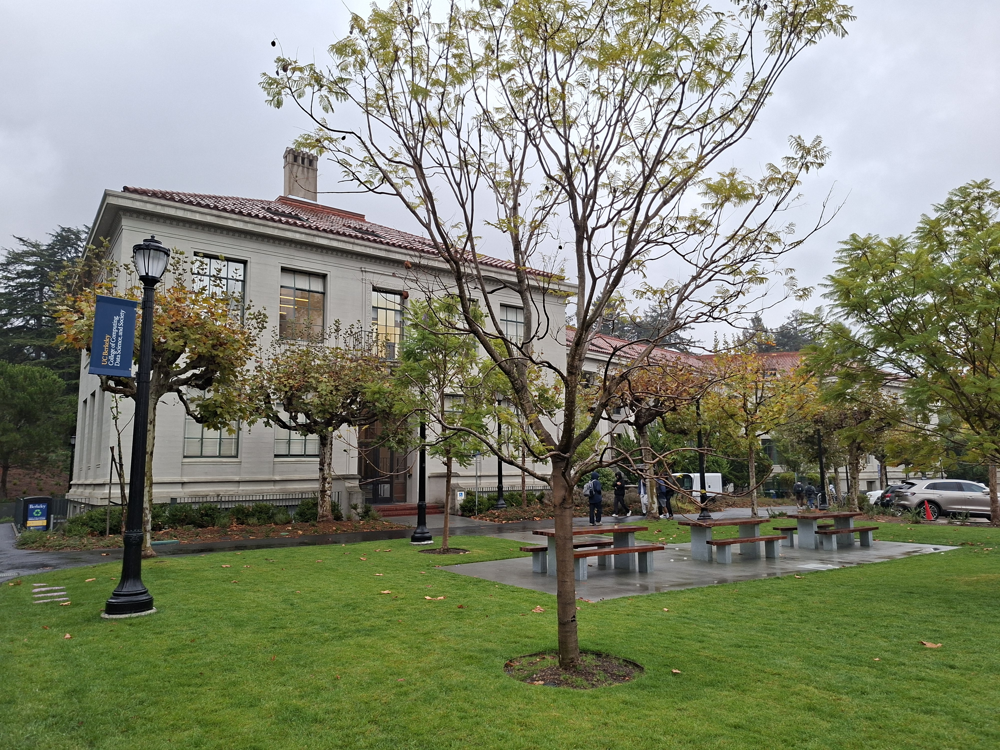
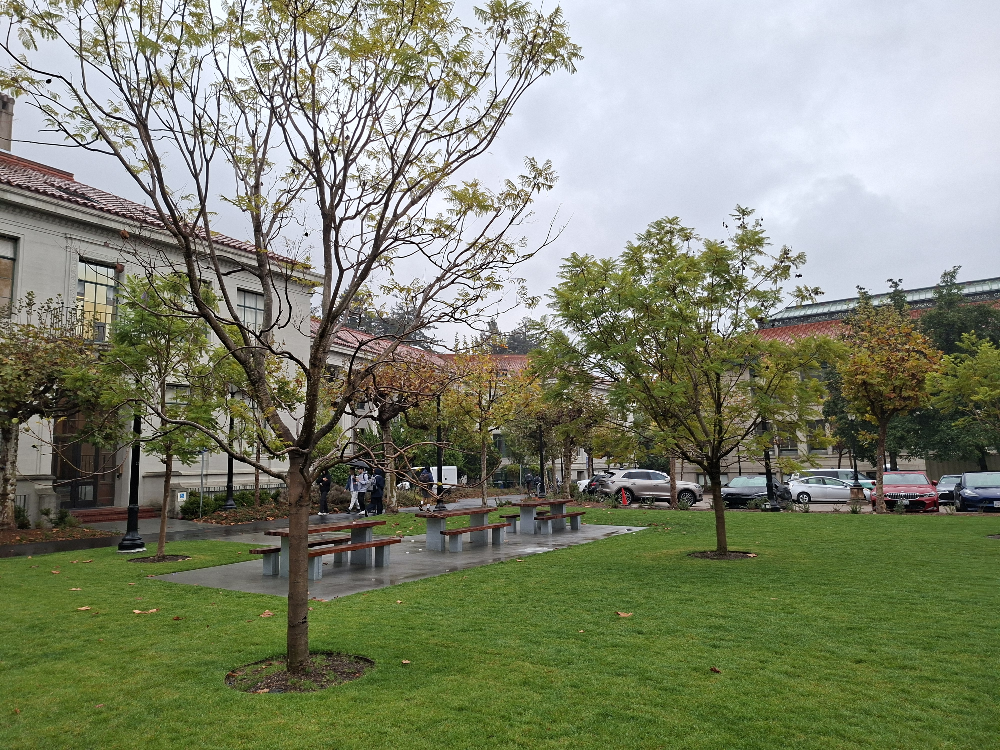
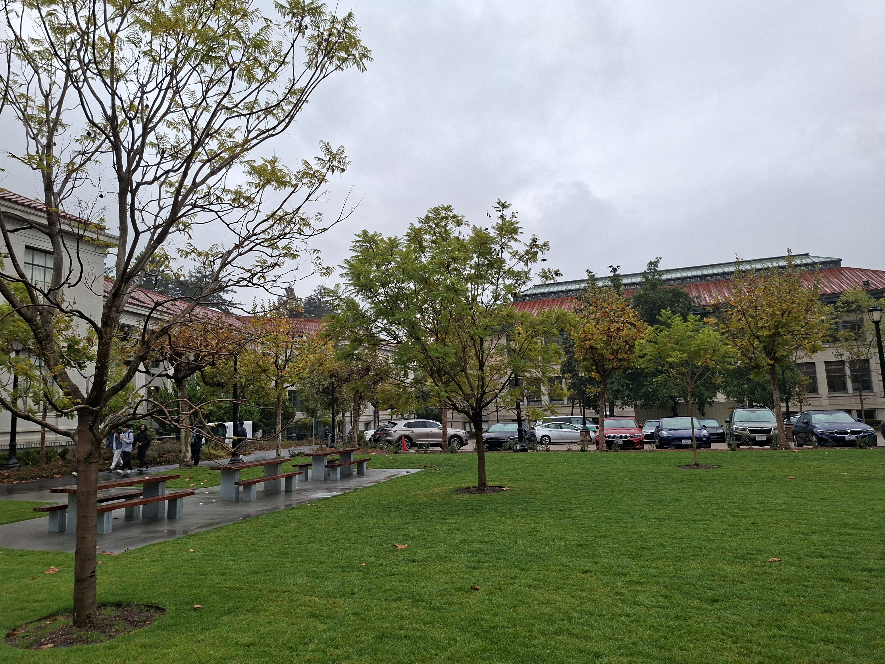
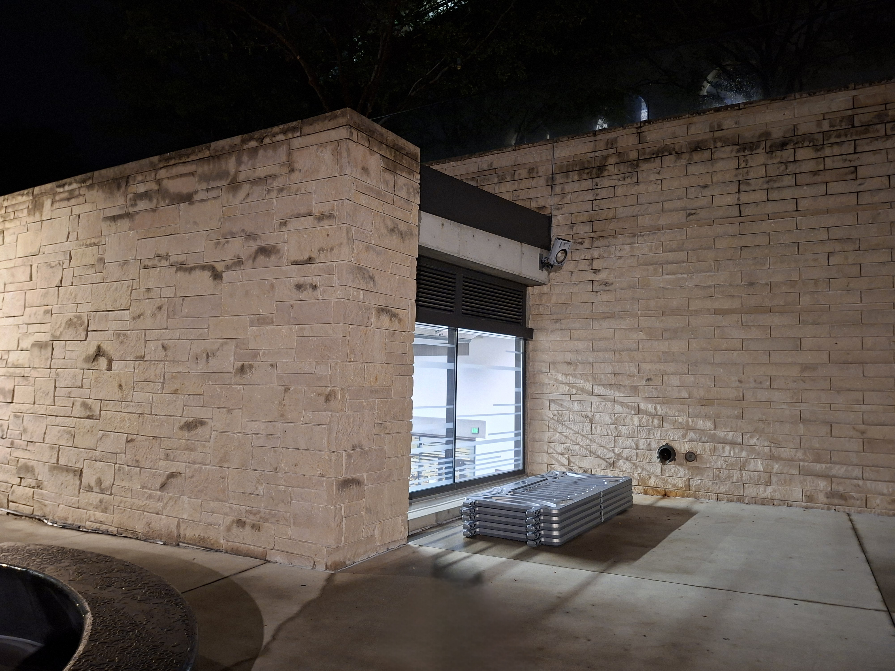
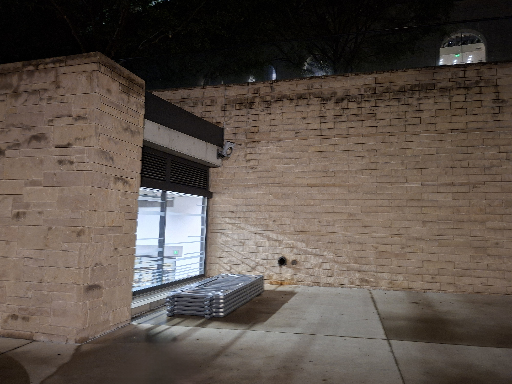
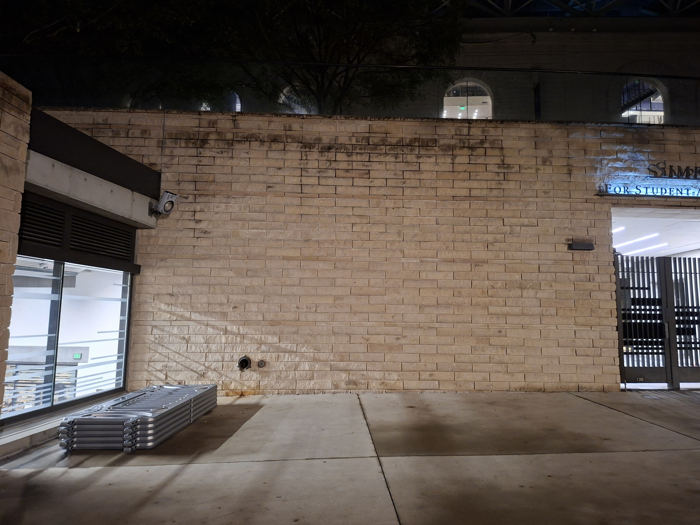
A homography is a 3x3 matrix \(H\) with 8 degrees of freedom (the bottom-right entry is fixed to 1) such that \(p' \simeq Hp\) in
homogeneous coordinates. For one correspondence \((x, y) \rightarrow (x', y')\):
$$ x' = \frac{h_{11}x + h_{12}y + h_{13}}{h_{31}x + h_{32}y + 1}, \qquad y' = \frac{h_{21}x + h_{22}y + h_{23}}{h_{31}x + h_{32}y + 1} $$
Multiplying out the denominator makes both equations linear in the eight unknowns:
$$ h_{11}x + h_{12}y + h_{13} - h_{31}xx' - h_{32}yx' = x' $$
$$ h_{21}x + h_{22}y + h_{23} - h_{31}xy' - h_{32}yy' = y' $$
So each correspondence contributes two rows to the system \(A\mathbf{h} = \mathbf{b}\), where
\(\mathbf{h} = [h_{11}, h_{12}, h_{13}, h_{21}, h_{22}, h_{23}, h_{31}, h_{32}]^T\):
$$ \begin{bmatrix} x & y & 1 & 0 & 0 & 0 & -xx' & -yx' \\ 0 & 0 & 0 & x & y & 1 & -xy' & -yy' \end{bmatrix} \mathbf{h} = \begin{bmatrix} x' \\ y' \end{bmatrix} $$
Four correspondences give a square system, but a couple of pixels of click error then change \(H\) a lot. Therefore, I click
8 correspondences per image pair (16 equations for 8 unknowns) and solve the overdetermined system in the least-squares
sense with numpy.linalg.lstsq. I picked the points manually using a matplotlib ginput window that shows both
images side by side, choosing distinctive, static features (corners of windows, roofs and buildings) that are far from the camera,
so that parallax is small.
def build_system(im1_pts, im2_pts):
p = np.asarray(im1_pts, dtype=np.float64)
q = np.asarray(im2_pts, dtype=np.float64)
if p.shape != q.shape or p.ndim != 2 or p.shape[1] != 2:
raise ValueError("im1_pts and im2_pts must both be n-by-2")
n = len(p)
if n < 4:
raise ValueError("need at least 4 correspondences")
x, y = p[:, 0], p[:, 1]
xp, yp = q[:, 0], q[:, 1]
A = np.zeros((2 * n, 8))
b = np.zeros(2 * n)
A[0::2, 0], A[0::2, 1], A[0::2, 2] = x, y, 1
A[0::2, 6], A[0::2, 7] = -x * xp, -y * xp
b[0::2] = xp
A[1::2, 3], A[1::2, 4], A[1::2, 5] = x, y, 1
A[1::2, 6], A[1::2, 7] = -x * yp, -y * yp
b[1::2] = yp
return A, b
def computeH(im1_pts, im2_pts):
A, b = build_system(im1_pts, im2_pts)
h, *_ = np.linalg.lstsq(A, b, rcond=None)
return np.append(h, 1.0).reshape(3, 3)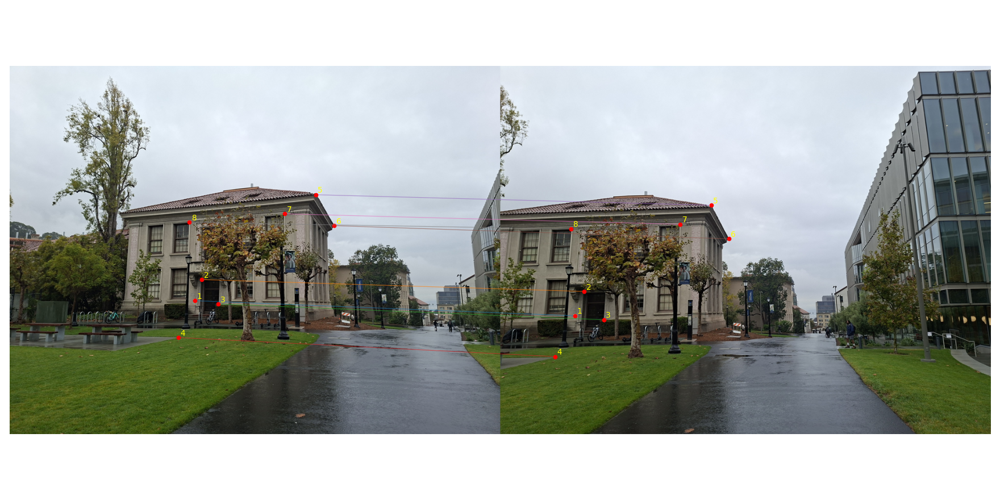
Below is the full 16x8 system \(A\mathbf{h} = \mathbf{b}\) for these 8 correspondences:
System A h = b (h = [h11 h12 h13 h21 h22 h23 h31 h32]^T)
A =
[[ 377.07 477.78 1. 0. 0. 0. -57443.46 -72785.01]
[ 0. 0. 0. 377.07 477.78 1. -191790.63 -243012.57]
[ 391.83 434.86 1. 0. 0. 0. -67048.9 -74412.17]
[ 0. 0. 0. 391.83 434.86 1. -179849.5 -199600.48]
[ 425.36 484.49 1. 0. 0. 0. -89902.84 -102399.5 ]
[ 0. 0. 0. 425.36 484.49 1. -219773.75 -250322.69]
[ 343.54 552.89 1. 0. 0. 0. -38511.47 -61979.96]
[ 0. 0. 0. 343.54 552.89 1. -203304.06 -327195.42]
[ 623.87 261.83 1. 0. 0. 0. -268256.88 -112584.29]
[ 0. 0. 0. 623.87 261.83 1. -176737.84 -74174.81]
[ 661.43 324.87 1. 0. 0. 0. -308359.08 -151456.21]
[ 0. 0. 0. 661.43 324.87 1. -232622.73 -114256.92]
[ 560.83 300.73 1. 0. 0. 0. -205795.01 -110351.54]
[ 0. 0. 0. 560.83 300.73 1. -180693.79 -96891.75]
[ 366.34 318.17 1. 0. 0. 0. -52860.56 -45908.91]
[ 0. 0. 0. 366.34 318.17 1. -121471.61 -105496.98]]
b =
[152.34 508.63 171.12 459. 211.36 516.68 112.1 591.79 429.99 283.29 466.2 351.7 366.95 322.19 144.29 331.58]Solving in the least-squares sense gives the homography below. Its mean reprojection error over the 8 clicked points is 1.58 px.
$$ H = \begin{bmatrix} 1.432584 & -0.022965 & -351.905391 \\ 0.184106 & 1.287335 & -97.944158 \\ 0.000381 & 0.000021 & 1.000000 \end{bmatrix} $$The mean reprojection error is the average distance between \(Hp\) and the clicked \(p'\) over the correspondences of a pair. The full systems are in set 1, set 2, and set 3.
| Pair | Recovered H | Mean reprojection error |
|---|---|---|
| Set 1, image 1 → 2 | \( \begin{bmatrix} 1.432584 & -0.022965 & -351.905391 \\ 0.184106 & 1.287335 & -97.944158 \\ 0.000381 & 0.000021 & 1.000000 \end{bmatrix} \) | 1.58 px |
| Set 1, image 2 → 3 | \( \begin{bmatrix} 1.493709 & -0.043001 & -326.699246 \\ 0.234157 & 1.289729 & -125.052900 \\ 0.000512 & -0.000020 & 1.000000 \end{bmatrix} \) | 0.84 px |
| Set 2, image 1 → 2 | \( \begin{bmatrix} 1.836541 & -0.021362 & -575.524924 \\ 0.315735 & 1.631305 & -248.136292 \\ 0.000701 & 0.000201 & 1.000000 \end{bmatrix} \) | 1.57 px |
| Set 2, image 2 → 3 | \( \begin{bmatrix} 1.341319 & -0.037750 & -275.431104 \\ 0.161069 & 1.144972 & -73.120452 \\ 0.000395 & -0.000114 & 1.000000 \end{bmatrix} \) | 1.21 px |
| Set 3, image 1 → 2 | \( \begin{bmatrix} 1.543063 & -0.049451 & -364.479142 \\ 0.224328 & 1.280306 & -118.498924 \\ 0.000527 & -0.000053 & 1.000000 \end{bmatrix} \) | 1.91 px |
| Set 3, image 2 → 3 | \( \begin{bmatrix} 1.546946 & -0.051262 & -375.822690 \\ 0.243862 & 1.291595 & -124.326241 \\ 0.000579 & -0.000050 & 1.000000 \end{bmatrix} \) | 0.63 px |
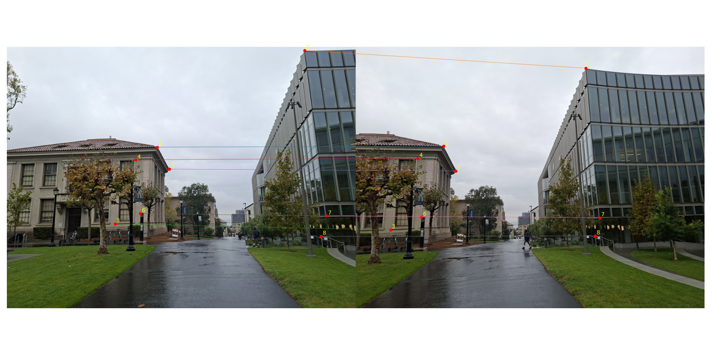
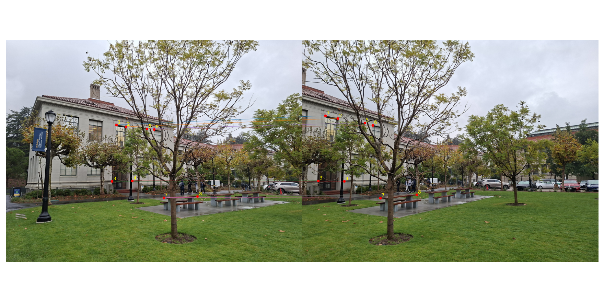
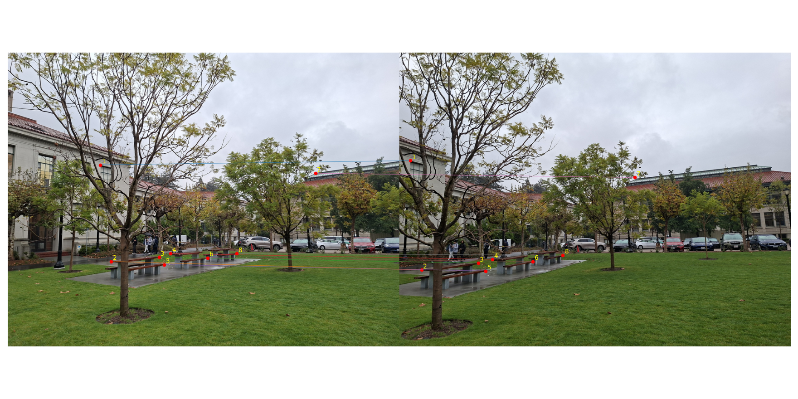
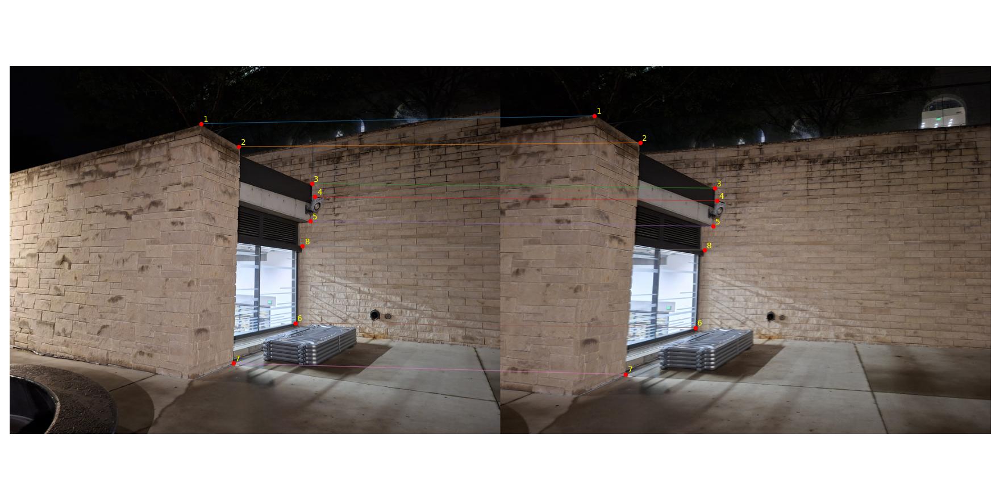
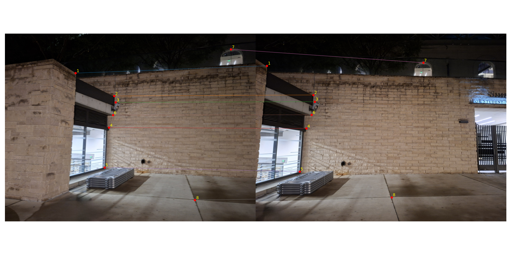
To warp an image by \(H\), I work backwards from the output so that there are no holes:
Nearest neighbour rounds \((x, y)\) to the closest pixel and copies it. Bilinear takes the four surrounding pixels and weights them by the fractional offsets. With \(x_0 = \lfloor x \rfloor\), \(y_0 = \lfloor y \rfloor\), \(f_x = x - x_0\) and \(f_y = y - y_0\): $$ I(x, y) = (1-f_x)(1-f_y)I(x_0, y_0) + f_x(1-f_y)I(x_0+1, y_0) + (1-f_x)f_yI(x_0, y_0+1) + f_xf_yI(x_0+1, y_0+1) $$ Both are written from scratch and vectorized with NumPy (processed in row chunks to bound memory).
def _sample(im, sx, sy, interp):
h, w, C = im.shape
inside = (sx >= 0) & (sx <= w - 1) & (sy >= 0) & (sy <= h - 1)
vals = np.zeros((sx.size, C))
x, y = sx[inside], sy[inside]
if interp == "nearest":
xi = np.rint(x).astype(int)
yi = np.rint(y).astype(int)
vals[inside] = im[yi, xi]
elif interp == "bilinear":
x0 = np.clip(np.floor(x).astype(int), 0, max(w - 2, 0))
y0 = np.clip(np.floor(y).astype(int), 0, max(h - 2, 0))
x1 = np.minimum(x0 + 1, w - 1)
y1 = np.minimum(y0 + 1, h - 1)
fx = (x - x0)[:, None]
fy = (y - y0)[:, None]
vals[inside] = (im[y0, x0] * (1 - fx) * (1 - fy) + im[y0, x1] * fx * (1 - fy) +
im[y1, x0] * (1 - fx) * fy + im[y1, x1] * fx * fy)
else:
raise ValueError(interp)
return vals, inside
def _warp(im, H, interp, out_shape=None, offset=None):
C = im.shape[2]
if out_shape is None or offset is None:
x0, y0, x1, y1 = _bbox(im.shape, H)
offset = (x0, y0)
out_shape = (y1 - y0 + 1, x1 - x0 + 1)
oh, ow = out_shape
Hinv = np.linalg.inv(H)
out = np.zeros((oh, ow, C))
xs = np.arange(ow) + offset[0]
rows = max(1, 1_500_000 // ow)
for r0 in range(0, oh, rows):
r1 = min(oh, r0 + rows)
ys = np.arange(r0, r1) + offset[1]
X, Y = np.meshgrid(xs, ys)
pts = np.stack([X.ravel(), Y.ravel(), np.ones(X.size)])
s = Hinv @ pts
z = s[2]
z = np.where(np.abs(z) > 1e-12, z, np.nan)
with np.errstate(invalid="ignore"):
sx, sy = s[0] / z, s[1] / z
vals, _ = _sample(im, sx, sy, interp)
out[r0:r1] = vals.reshape(r1 - r0, ow, C)
return out, tuple(offset)
def warpImageNearestNeighbour(im, H, out_shape=None, offset=None):
out, off = _warp(_premult(im), H, "nearest", out_shape, offset)
return _unpremult(out), off
def warpImageBilinear(im, H, out_shape=None, offset=None):
out, off = _warp(_premult(im), H, "bilinear", out_shape, offset)
return _unpremult(out), offTo test the warp, I rectify a known rectangle. The output is an upright rectangle whose width is the average length of the clicked top and bottom edges (so the result stays near the photo's own resolution), and whose height follows from the known aspect ratio. \(H\) maps the four clicked corners to the four corners of that rectangle, and the image is then inverse-warped with both interpolation methods.
I photographed this sign from below and at an angle, then clicked its four corners (top-left, top-right, bottom-right, bottom-left). The sign is a portrait rectangle; I do not know its exact dimensions, so I estimated its proportions from the clicked corners corrected for perspective. The target aspect ratio (width : height) is 2 : 3, giving a rectified image of 101 × 152 px.
| Corner | Clicked point in photo (x, y) | Target point (x', y') |
|---|---|---|
| Top-left | (355.5, 404.7) | (0.0, 0.0) |
| Top-right | (447.7, 429.4) | (101.0, 0.0) |
| Bottom-right | (467.2, 577.4) | (101.0, 151.5) |
| Bottom-left | (362.0, 560.5) | (0.0, 151.5) |
The system is exactly determined (4 correspondences, 8 equations), so the reprojection error is 0. The recovered homography is:
$$ H = \begin{bmatrix} 1.126481 & -0.046937 & -381.476430 \\ -0.330784 & 1.236088 & -382.642389 \\ -0.001057 & 0.001142 & 1.000000 \end{bmatrix} $$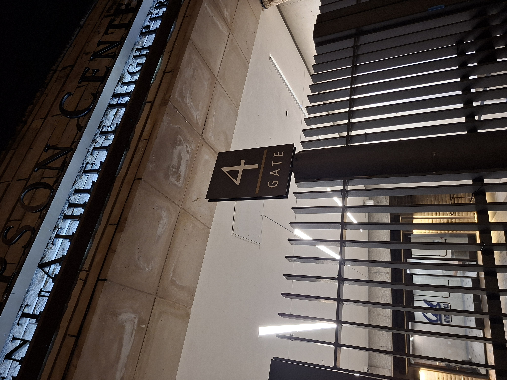
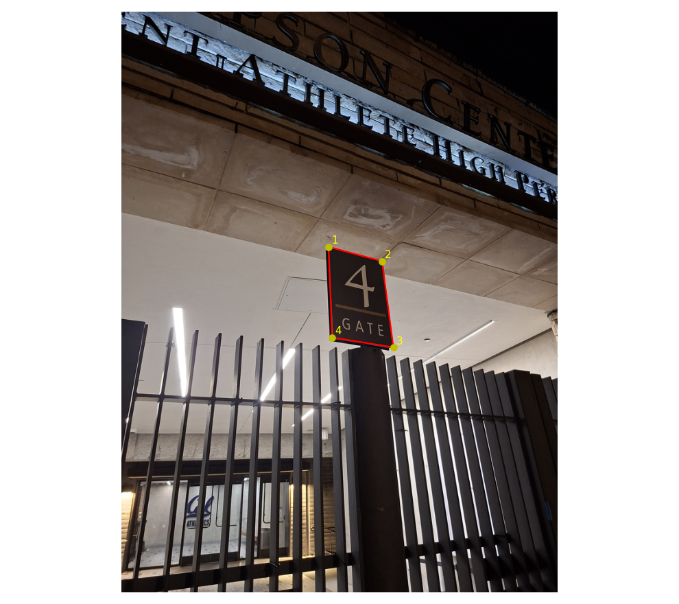
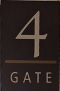
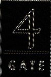
im1_pts (x,y):
[[355.51 404.69]
[447.71 429.37]
[467.19 577.42]
[362. 560.54]]
im2_pts (x,y):
[[ 0. 0. ]
[101. 0. ]
[101. 151.5]
[ 0. 151.5]]
System A h = b (h = [h11 h12 h13 h21 h22 h23 h31 h32]^T)
A =
[[ 355.51 404.69 1. 0. 0. 0. -0. -0. ]
[ 0. 0. 0. 355.51 404.69 1. -0. -0. ]
[ 447.71 429.37 1. 0. 0. 0. -45217.65 -43364.95]
[ 0. 0. 0. 447.71 429.37 1. -0. -0. ]
[ 467.19 577.42 1. 0. 0. 0. -47185.12 -58317.71]
[ 0. 0. 0. 467.19 577.42 1. -70777.68 -87476.56]
[ 362. 560.54 1. 0. 0. 0. -0. -0. ]
[ 0. 0. 0. 362. 560.54 1. -54841.19 -84918.86]]
b =
[ 0. 0. 101. 0. 101. 151.5 0. 151.5]
Recovered H =
[[ 1.126481 -0.046937 -381.47643 ]
[ -0.330784 1.236088 -382.642389]
[ -0.001057 0.001142 1. ]]
Reprojection error per point (px): [0. 0. 0. 0.] mean = 0.000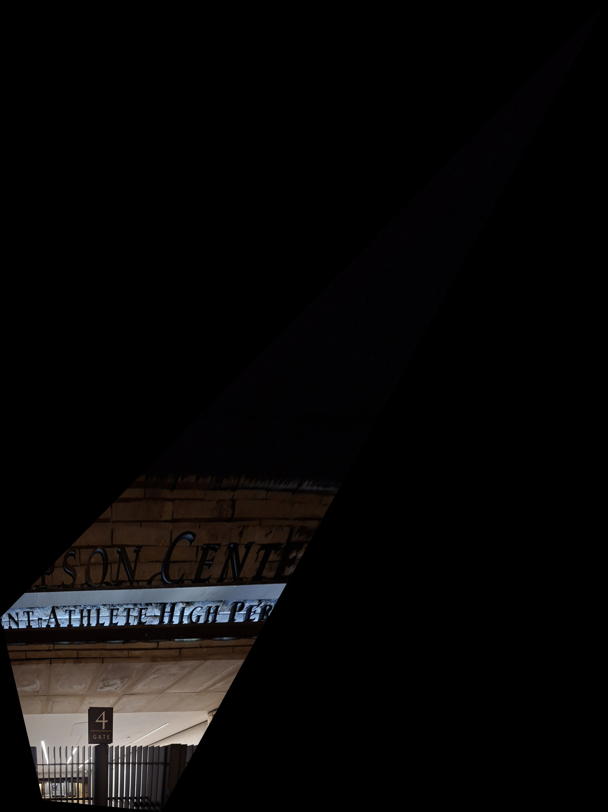
A second photo of a rectangular sign, again shot from below at an angle. This sign is a landscape rectangle, and its proportions are estimated the same way. The target aspect ratio (width : height) is 7 : 4, giving a rectified image of 342 × 195 px.
| Corner | Clicked point in photo (x, y) | Target point (x', y') |
|---|---|---|
| Top-left | (102.3, 591.7) | (0.0, 0.0) |
| Top-right | (430.8, 512.5) | (341.8, 0.0) |
| Bottom-right | (433.4, 737.2) | (341.8, 195.3) |
| Bottom-left | (93.2, 798.2) | (0.0, 195.3) |
The system is exactly determined (4 correspondences, 8 equations), so the reprojection error is 0. The recovered homography is:
$$ H = \begin{bmatrix} 1.350300 & 0.059447 & -173.256686 \\ 0.278743 & 1.156099 & -712.577040 \\ 0.000404 & 0.000215 & 1.000000 \end{bmatrix} $$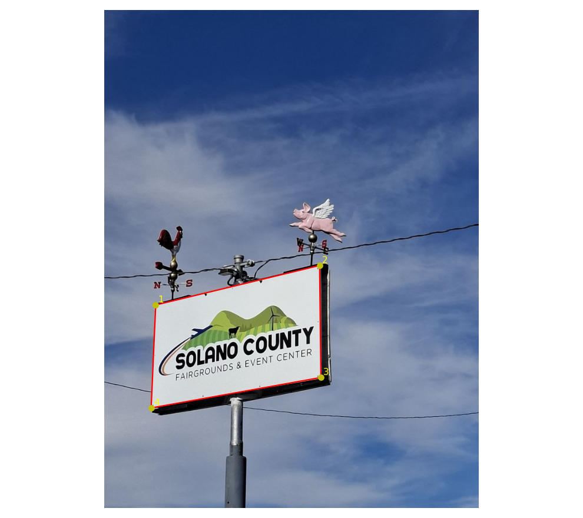
im1_pts (x,y):
[[102.26 591.71]
[430.83 512.49]
[433.43 737.16]
[ 93.17 798.2 ]]
im2_pts (x,y):
[[ 0. 0. ]
[341.84 0. ]
[341.84 195.34]
[ 0. 195.34]]
System A h = b (h = [h11 h12 h13 h21 h22 h23 h31 h32]^T)
A =
[[ 102.26 591.71 1. 0. 0. 0. -0. -0. ]
[ 0. 0. 0. 102.26 591.71 1. -0. -0. ]
[ 430.83 512.49 1. 0. 0. 0. -147274.92 -175188.08]
[ 0. 0. 0. 430.83 512.49 1. -0. -0. ]
[ 433.43 737.16 1. 0. 0. 0. -148162.81 -251990.88]
[ 0. 0. 0. 433.43 737.16 1. -84664.47 -143994.79]
[ 93.17 798.2 1. 0. 0. 0. -0. -0. ]
[ 0. 0. 0. 93.17 798.2 1. -18199.28 -155917.93]]
b =
[ 0. 0. 341.84 0. 341.84 195.34 0. 195.34]
Recovered H =
[[ 1.3503 0.059447 -173.256686]
[ 0.278743 1.156099 -712.57704 ]
[ 0.000404 0.000215 1. ]]
Reprojection error per point (px): [0. 0. 0. 0.] mean = 0.000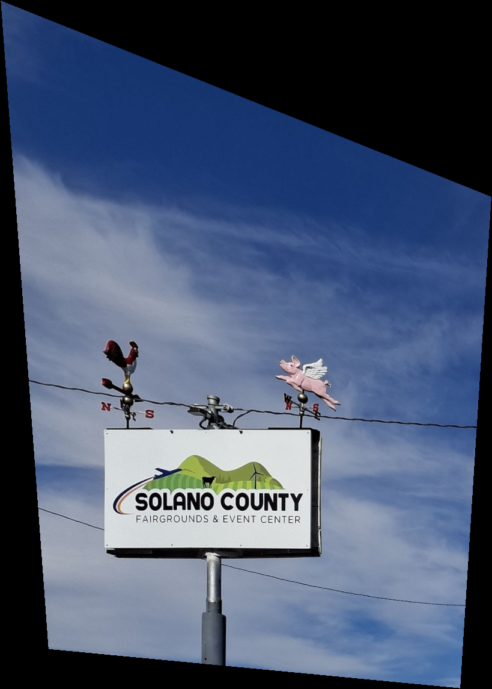
Quality. Nearest neighbour copies one source pixel to each output pixel, so straight edges that are not axis-aligned come out
as staircases, thin lines can break up or change thickness, and fine texture can shimmer. Bilinear averages four neighbours, so
edges are smooth and continuous, at the price of slight blurring since it acts as a small low-pass filter. The difference images above
(|NN - Bilinear| x 5) are concentrated along edges and high-contrast detail, such as the outlines of the numeral and letters,
while flat regions agree. Neither method handles strong minification well, since both sample the source without pre-filtering, so
heavily shrunk regions can alias.
Speed. Nearest neighbour needs one memory lookup per output pixel and channel. Bilinear needs four lookups plus a handful
of multiplies and adds, so it does more work per pixel. The measured runtimes of the two functions on the rectified images (from the
script's timer) are:
| Rectified image | Nearest Neighbour (seconds) | Bilinear (seconds) |
|---|---|---|
| "4 GATE" sign | 0.022 | 0.029 (1.3x slower) |
| Solano County sign | 0.021 | 0.040 (2.0x slower) |
For the mosaics, I always use bilinear, since the extra cost is small compared with the quality gain, and a visible seam would be far worse than slight blur.
def weight_map(alpha):
m = np.pad(alpha > 0.5, 1)
d = ndimage.distance_transform_edt(m)[1:-1, 1:-1]
return d / (d.max() + 1e-9)
def blend_images(colors, alphas, weights, mode="twoband", sigma=5.0):
W = np.stack(weights)
Wsum = W.sum(axis=0)
denom = np.maximum(Wsum, 1e-9)[..., None]
if mode == "feather":
out = sum(w[..., None] * c for w, c in zip(weights, colors)) / denom
elif mode == "twoband":
lows, highs = [], []
for c, a in zip(colors, alphas):
m = (a > 0.5).astype(float)
# normalized blur: don't let empty (black) pixels leak into the low band
low = ndimage.gaussian_filter(c * m[..., None], sigma=(sigma, sigma, 0))
low /= ndimage.gaussian_filter(m, sigma)[..., None] + 1e-9
lows.append(low * m[..., None])
highs.append((c - low) * m[..., None])
low_out = sum(w[..., None] * l for w, l in zip(weights, lows)) / denom
idx = np.argmax(W, axis=0)[None, ..., None]
high_out = np.take_along_axis(np.stack(highs), idx, axis=0)[0]
out = low_out + high_out
else:
raise ValueError("blend must be 'feather' or 'twoband'")
out = np.clip(out, 0, 1)
out[Wsum <= 1e-9] = 0
alpha = (Wsum > 1e-9).astype(float)
return np.dstack([out, alpha])
def build_mosaic(images, Hs, blend="twoband", sigma=5.0, max_pixels=60e6):
boxes = [_bbox(im.shape, H) for im, H in zip(images, Hs)]
x0 = min(b[0] for b in boxes); y0 = min(b[1] for b in boxes)
x1 = max(b[2] for b in boxes); y1 = max(b[3] for b in boxes)
out_shape = (y1 - y0 + 1, x1 - x0 + 1)
if out_shape[0] * out_shape[1] > max_pixels:
raise ValueError("Mosaic canvas would be %dx%d. Something is badly off with "
"the homographies (bad correspondences?)." % out_shape[::-1])
colors, alphas, weights = [], [], []
for im, H in zip(images, Hs):
a = im[..., 3] if im.shape[2] == 4 else np.ones(im.shape[:2])
stack = np.dstack([im[..., :3] * a[..., None], a, weight_map(a)])
out, _ = _warp(stack, H, "bilinear", out_shape, (x0, y0))
al = out[..., 3]
keep = al > 0.5
col = out[..., :3] / np.maximum(al, 1e-6)[..., None]
colors.append(np.clip(col, 0, 1) * keep[..., None])
alphas.append(al * keep)
weights.append(out[..., 4] * keep)
return blend_images(colors, alphas, weights, blend, sigma), (x0, y0)
def homographies_to_reference(pair_pts, n, ref, model="homography"):
est = computeH if model == "homography" else computeTranslation
fwd = [est(a, b) for a, b in pair_pts] # i -> i+1
Hs = [None] * n
Hs[ref] = np.eye(3)
for i in range(ref - 1, -1, -1):
Hs[i] = Hs[i + 1] @ fwd[i]
for i in range(ref + 1, n):
Hs[i] = Hs[i - 1] @ np.linalg.inv(fwd[i - 1])
return [H / H[2, 2] for H in Hs]All three mosaics below use the two-band blend, and the feather-only result is shown beneath each one for comparison.
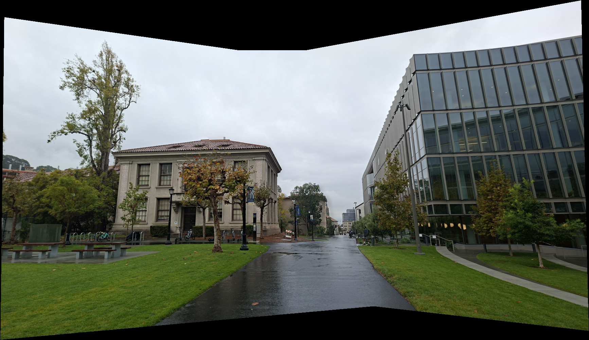
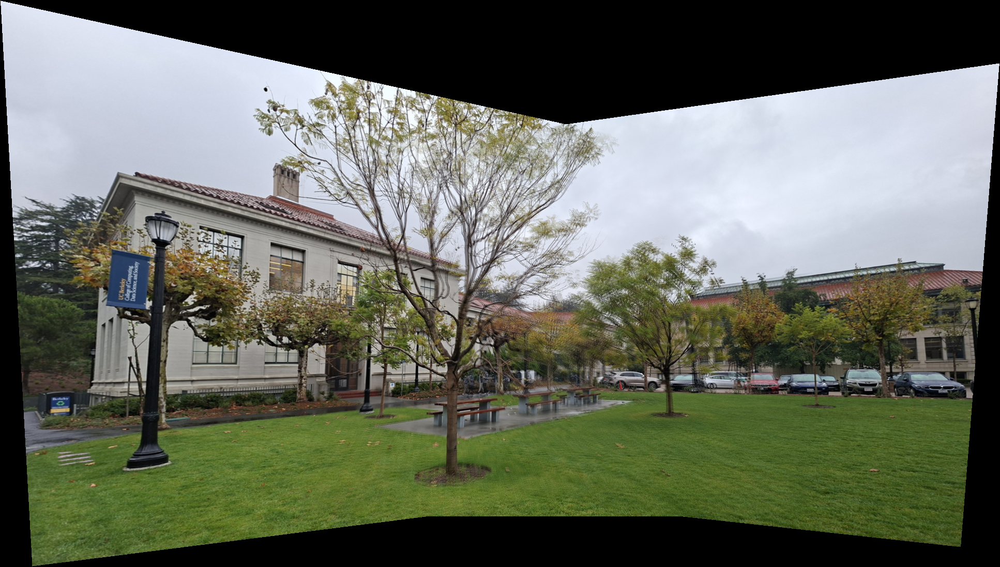
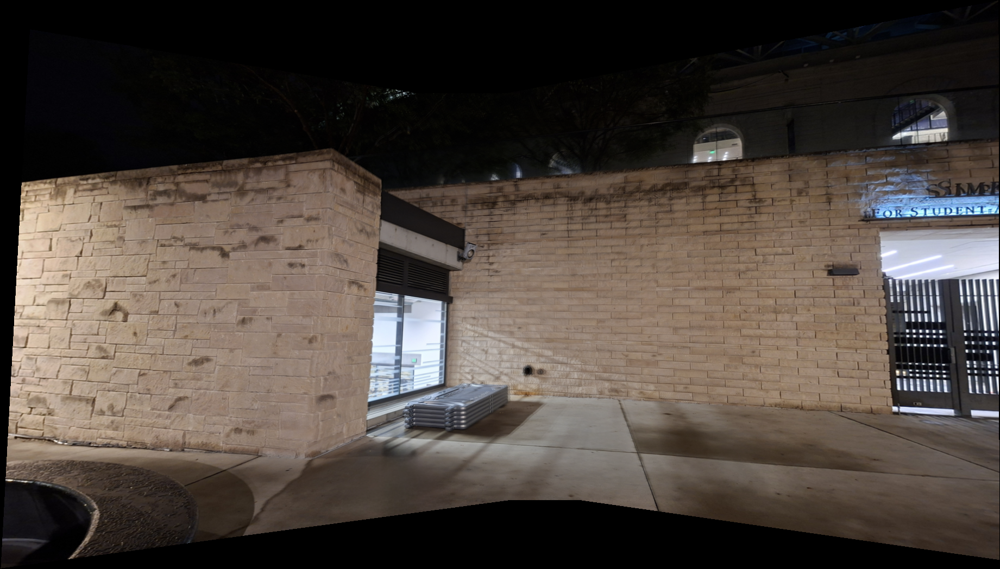
A planar mosaic maps everything onto one image plane, so images far from the reference get stretched. For example, in set 2 the homography for image 1 to image 2 has \(h_{11} = 1.84\) and \(h_{22} = 1.63\). A cylinder is a better model for a camera that pans. I project every photo onto a cylinder of radius \(f\) (the focal length in pixels), after which a pure camera rotation about the vertical axis becomes a horizontal translation between neighbouring images. Stitching then needs only a translation instead of a full homography.
For each pixel \((u, v)\) of the cylindrical image (measured from the image center), with \(\theta = u / f\): $$ x_{src} = f\tan\theta + c_x, \qquad y_{src} = \frac{v}{\cos\theta} + c_y $$ Every output pixel is sampled (bilinearly) directly from the original photo with no intermediate resampling, which keeps the full original resolution. I also implemented the forward mapping $$ (x, y) \rightarrow \left( f\arctan\frac{x - c_x}{f},\; \frac{f\,(y - c_y)}{\sqrt{(x - c_x)^2 + f^2}} \right) $$ so that correspondences can be clicked on the original photos and then projected onto the cylinder.
Instead of guessing the camera's focal length, I search over \(f\) / (image width) from 0.4 to 1.8 for the value at which the projected correspondences of neighbouring images differ by a single pure translation (minimum RMS residual after subtracting the best-fit translation). The translation for each pair is then the mean displacement of its projected points. The images are chained to the middle image and blended with the same two-band code as in A.4.
| Cylindrical mosaic | f / image width | f (image width 1000 px) | Translation-fit RMS residual |
|---|---|---|---|
| Set 1 | 0.670 | 670 px | 5.67 px |
| Set 2 | 0.702 | 702 px | 4.37 px |
def cylinder_forward(pts, shape, f):
h, w = shape[:2]
cx, cy = (w - 1) / 2.0, (h - 1) / 2.0
p = np.asarray(pts, float)
dx = p[:, 0] - cx
u = f * np.arctan(dx / f)
v = f * (p[:, 1] - cy) / np.hypot(dx, f)
return np.c_[u + (_cyl_width(shape, f) - 1) / 2.0, v + cy]
def estimate_cyl_ratio(pair_pts, shapes, lo=0.4, hi=1.8):
rs = np.linspace(lo, hi, 281)
c = [_cyl_residual(pair_pts, shapes, r) for r in rs]
k = int(np.argmin(c))
rs2 = np.linspace(rs[max(k - 1, 0)], rs[min(k + 1, len(rs) - 1)], 101)
c2 = [_cyl_residual(pair_pts, shapes, r) for r in rs2]
j = int(np.argmin(c2))
return float(rs2[j]), float(c2[j])
def cylindricalWarp(im, f):
im4 = _premult(im)
h, w, _ = im4.shape
cx, cy = (w - 1) / 2.0, (h - 1) / 2.0
ow = _cyl_width(im4.shape, f)
u = np.arange(ow) - (ow - 1) / 2.0
v = np.arange(h) - cy
U, V = np.meshgrid(u, v)
th = U / f
sx = f * np.tan(th) + cx
sy = V / np.cos(th) + cy
vals, _ = _sample(im4, sx.ravel(), sy.ravel(), "bilinear")
return _unpremult(vals.reshape(h, ow, -1))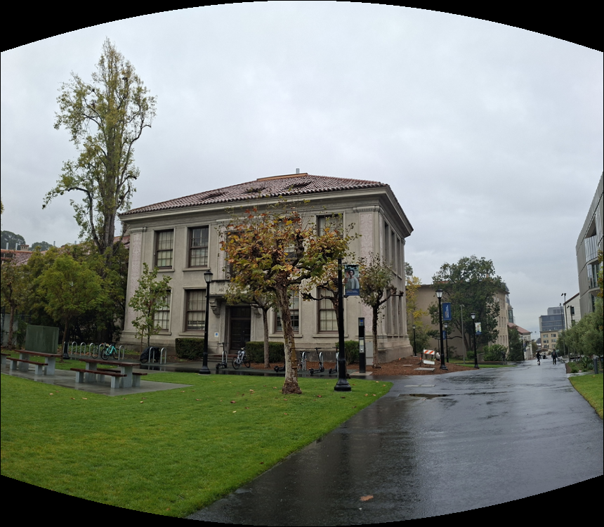
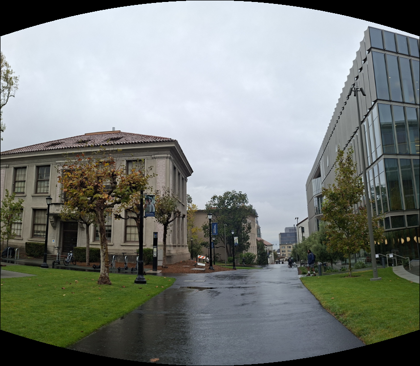
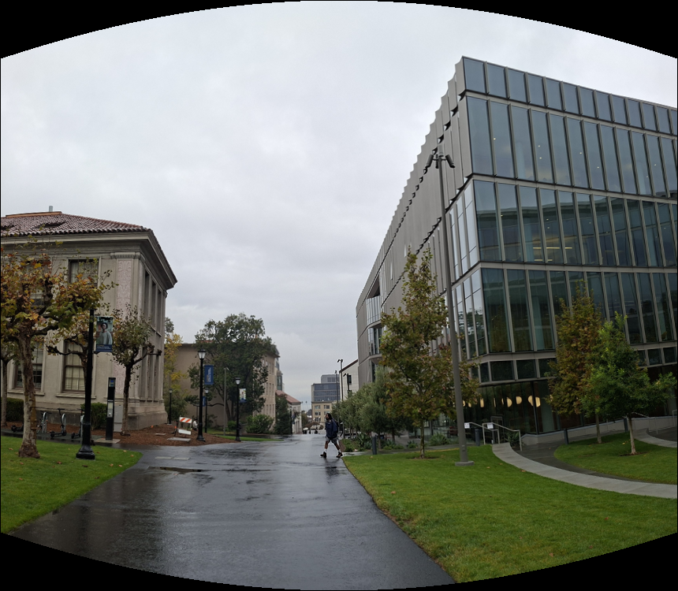
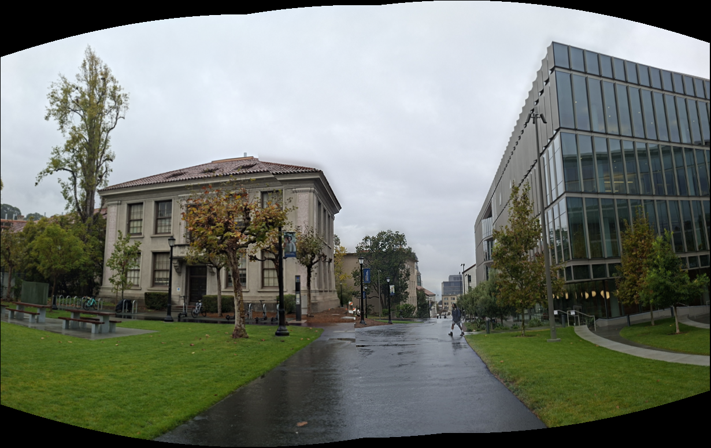
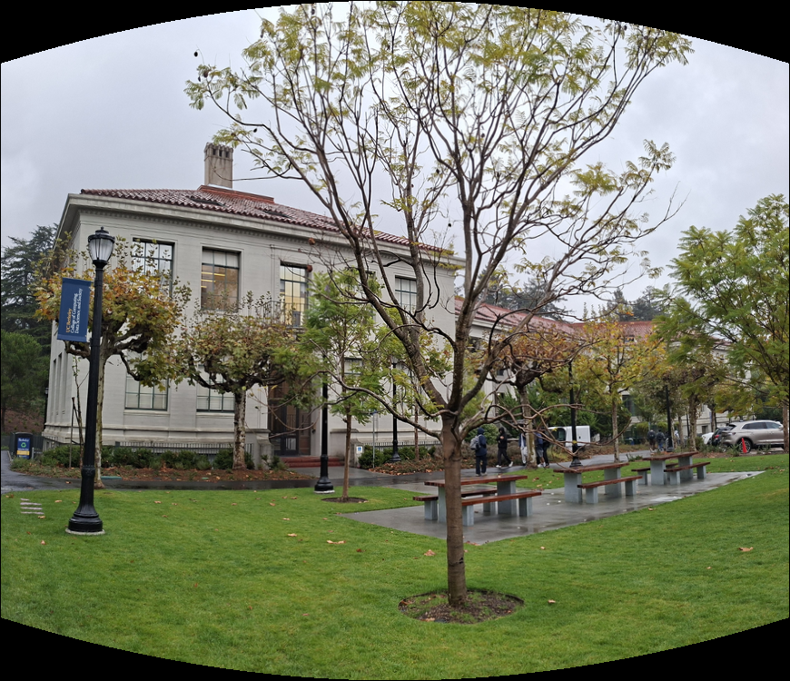
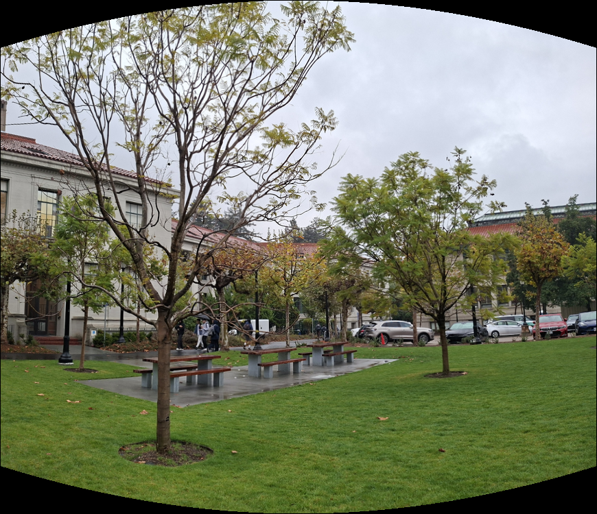
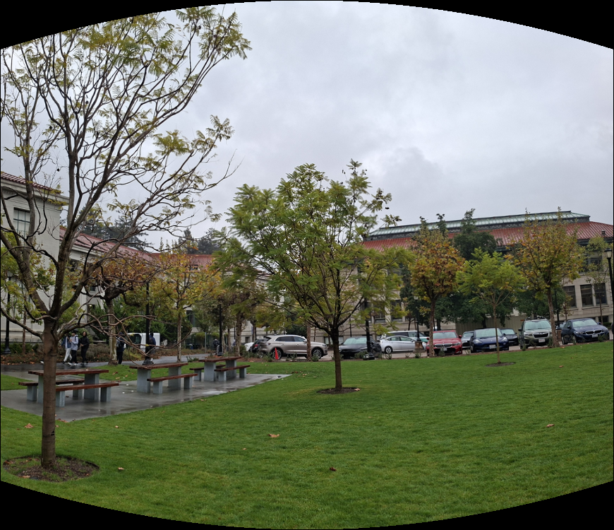
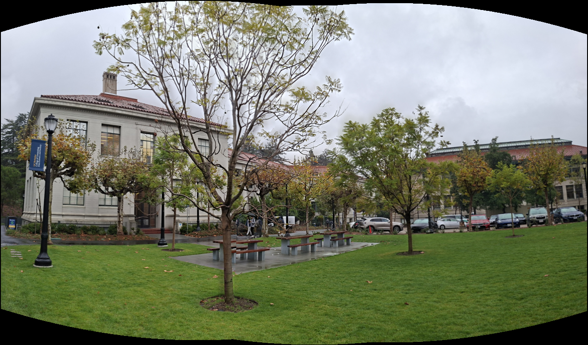